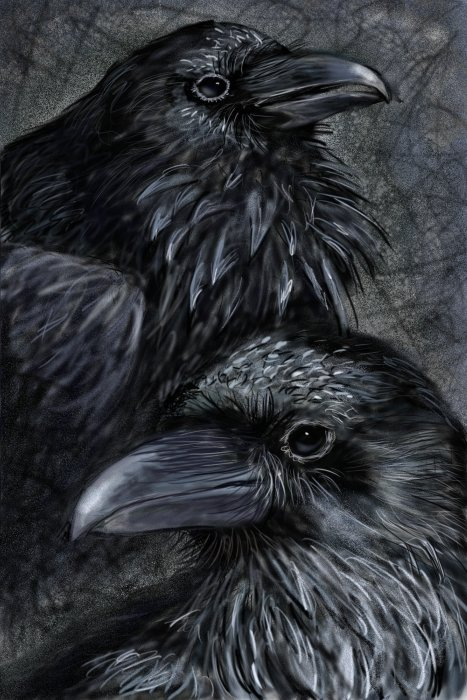

АУДУМЛА - едно от първите живи същества - гигантска крава,
която се появила заедно с великана Имир от ледения хаос. Тя е откърмила първя великан Имир.
Когато водата на Гинунгагап змръзнала отново, кравата Аудумла близала леда, докато се появил Бури,
баща на Бор, който пък бил баща на Один, Вили и Ве - първите богове от расата Аезир (ази).
СЛЕЙПНИР - осмоног вълшебен кон, който Локи подарил на Один.
Той можел да препуска по земята, по морските вълни и да лети във въздуха.
С него Один пътешествал между световете.
МУНИН и ХУГИН - двата вълшебни гаравана, които служели на Один.
Всеки ден те летяли по широкия свят и разказвали на Один какво са видяли и чули.

ХЕЙДРУН - коза, която живеела в Асгард и се хранела с листата и
клонките на Игдрасил. Всички богове пиели от нейното мляко.